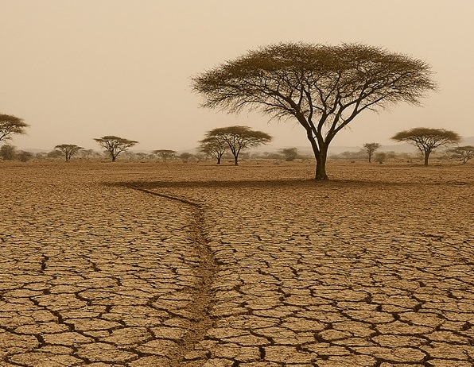

We turn spatial data to decisive, actionable intelligence to address solve environmental and development challenges across vulnerable communities.
Explore ServicesWe bridge the gap between data, understanding and actions
The Institute for Geospatial Research and Environmental Monitoring (IGREM) is an applied research and consulting centre dedicated to harnessing the power of geospatial science for for tackling environmental issues.
We combine GeoAI with deep local knowledge to deliver insights that drive smarter decisions for government, industry, and civil society.

From satellite image analysis to UAV and ground surveys, we deliver geospatial intelligence at every scale.
Remote sensing data analysis for land cover mapping, change detection, environmental monitoring, and agricultural assessments across Nigeria.
Custom geospatial analysis, database design, and spatial modelling to support planning, infrastructure, and investment decision making.
Interactive web maps, decision dashboards, and curated spatial datasets for government agencies, NGOs, and private sector clients.
Rigorous, evidence-based spatial research translated into accessible policy briefs for decision-makers and development organisations.
Workshops, short courses, and institutional training in GIS, remote sensing, and spatial data science for organisations and professionals.
Building a community that connects underprivileged GIS talent with global jobs, fellowships, scholarships, and grant opportunities.
We focuses on the sectors where geospatial intelligence creates the greatest value for Nigeria’s development.
Land use mapping, urban growth analysis, infrastructure siting, and development suitability assessments.
Flood risk analysis, erosion monitoring, deforestation assessment, and climate adaptation planning.
Pipeline corridor mapping, spill monitoring, environmental baseline studies, and land conflict analysis.
Spatial planning support, electoral geography, health access mapping, and infrastructure analytics.
Crop monitoring, yield estimation, land suitability analysis, and drought intelligence.
Displacement mapping, conflict monitoring, emergency response planning, and risk intelligence.
Partner with IGREM for data-driven environmental, urban and infrastructure solutions.
Contact Us